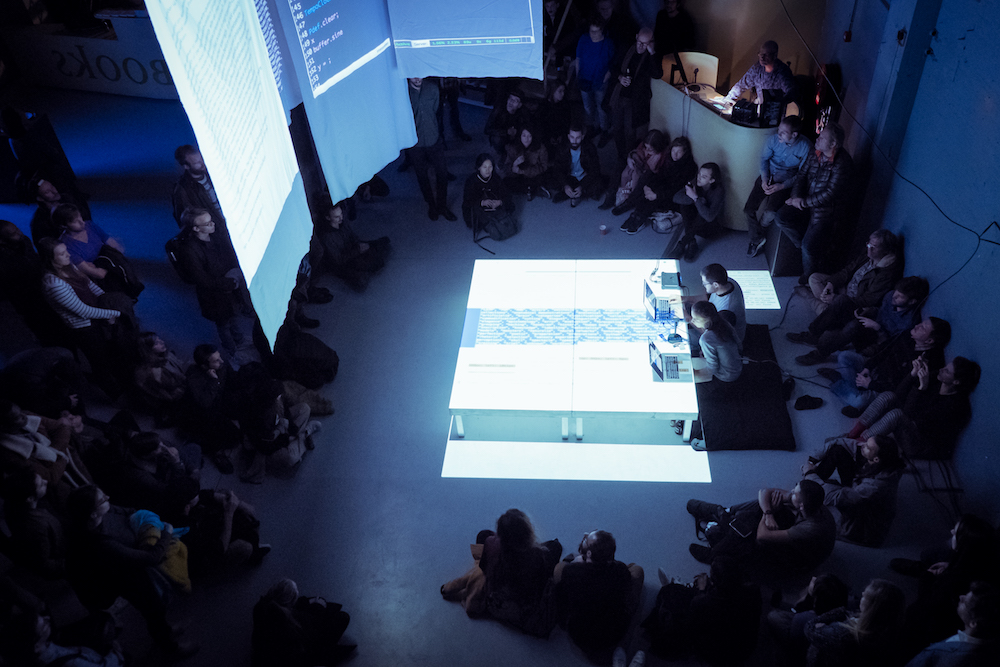
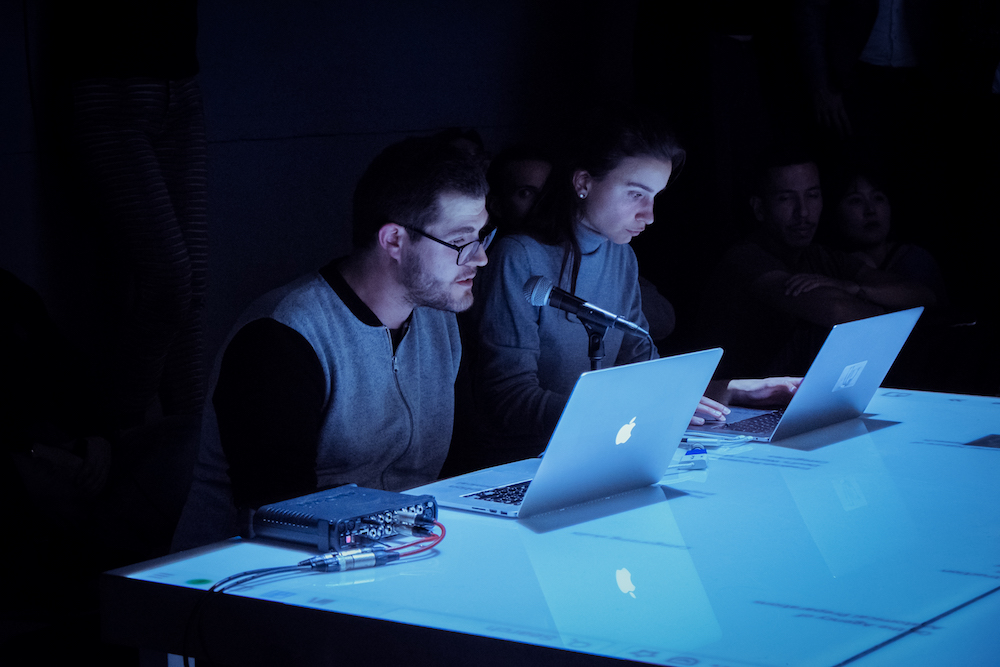
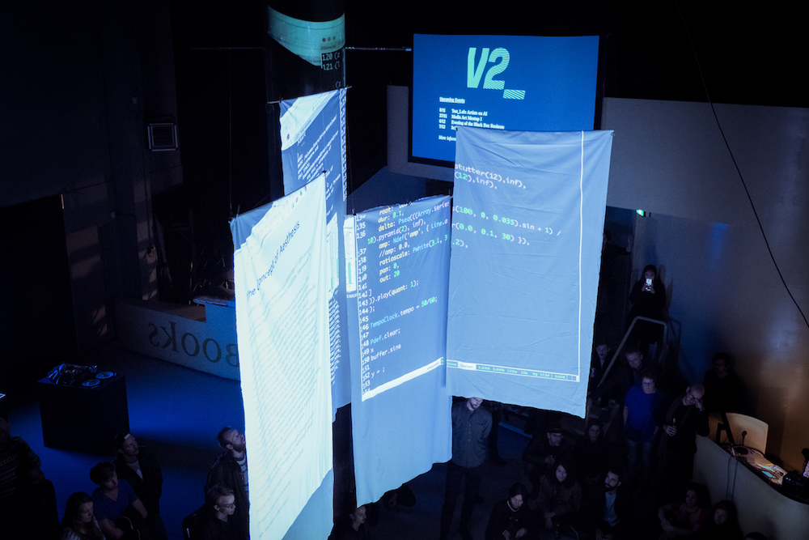
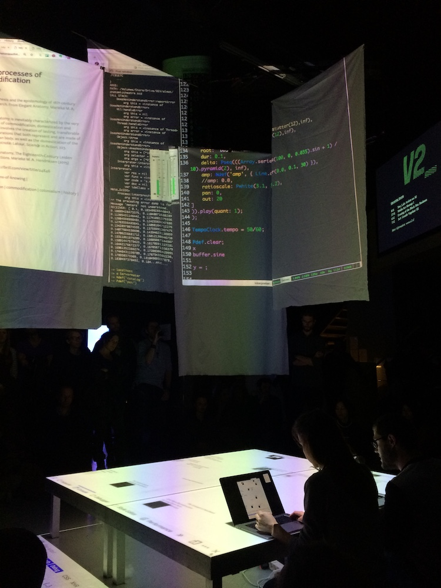

Anatomies of Intelligence
a corporeal investigation of codes
Following from a shared interest in livecoding and real-time algorithmic performance, we propose a research investigation into techniques for in-situ processual dissection of machine learning algorithms. In this research project, we seek to better understand the habitual and fixed objects of machine learning as well as their terminologies, and provide counter-techniques for conditions of emergence, movement-centered engagement and becoming.
The anatomical theatre, which paralleled the emergence of the university as the premier learning institute in Europe, has been a time-space where bodies and their organ[isation] became spectacles of scientific knowledge. It informed and disseminated new classification systems and taxonomies, as well as a specific understanding of the body as a complex system reducible to its constituent parts.
In our processual approach, we aim to develop an online repository of terminology and techniques for a critical examination of the “anatomy” of learning and prediction processes, data corpus and models of machine learning algorithms. And explore, through performance practice, how such a toolkit can confront the idealized bodies of artificial intelligence, its static representational structures and learning processes, by bringing about the re-organization, sectioning and bringing-into-relation of such codes.
Research Questions / Hypotheses
- Do our metaphors and epistemological assumptions make sense / are they naive/novel?
- (series of) Anatomical Gestures
- Performative/Live sketches - do they work, or not?




“Machine learning doesn't just make decisions without giving reasons, it modifies our very idea of reason
that is, it changes what is knowable and what is understood as real
It operationalises the two-world metaphysics of neoplatonism
that behind the world of the sensible is the world of the form or the idea.
A belief in a hidden layer of reality which is ontologically superior,
expressed mathematically and apprehended by going against direct experience.”
~ Manifesto on Algorithmic Humanitarianism
Part 02: Jo [5-7min] —
Demo screen sharing: “catalogue alive” ;
performative reading;
explain: libraries we created to interact with the dataset in the browser; embedding code and calling functions on the console; console as interface for content;
Part03: Jon [5] — Core questions: analytical/artistic framework:
We will build the presentation around our growing research catalogue (which I briefly introduce on the AI meet-up) that gathers entries on both anatomic and ML references. This is also the dataset we will use to experiment in real-time with a ML algorithm to build a clustering model of the entries in the catalogue. The latter will serve as basis for hypothesizing and discussing possible categories around the collected material. terminologies[]?
What have we learned from testLab?: thinking about epistemologies; how they are created and the aesthetics dimensions of that; and the connections with now: the epistemological regime emerging in times of AI.
> performance explore further: gestures; dramaturgy; set-up.
> other future goals: publishing: both the code ( + toolmaking / tool modifying / critical making ); theory bind (book form); / workshop format;
> what does this mean for us now?
Part04: Both — Q&A
How is machine learning influencing the production, experience, and storage of art, design and music?
* incentivized artistic processes involving acts of collection / categorization - co-creative categorization; For example, by questioning the objecthood of the ‘model’ of a ML algorithm, and instead propose that a model be ever-evolving. Inspired by Christopher Small’s claim that music is not a thing, but an action, we rephrase the ‘model’ as always ‘modelling’, activating entanglements between people, algorithms, and contexts.
* modelling as a process towards understanding / sense-making
And what alternative insights do we learn from these artistic applications and experiments that we don’t get from market-driven innovations?
* focus on process; embodiment, presence;
* crucial to the anatomical approach: in/out of the black-box/white-cube-spectacle - binarims;
* developing new metaphors (recognizing that these systems heavily depend on metaphors - e.g. “neurons”
{% for post in site.posts %}
{% assign post_id = post.title | slugify:"latin" %}
{% endfor %}
catalog.randomize()
catalog.examples
e1 = catalog.examples.choose()
e2 = catalog.examples.choose()
 {% endif %}
{% endif %}